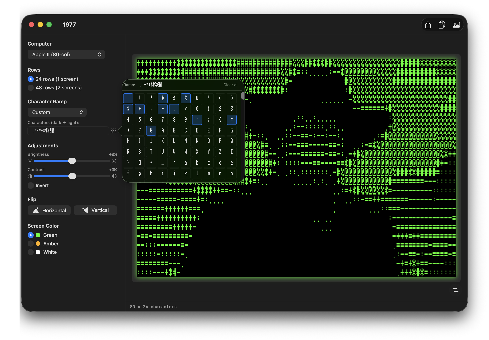
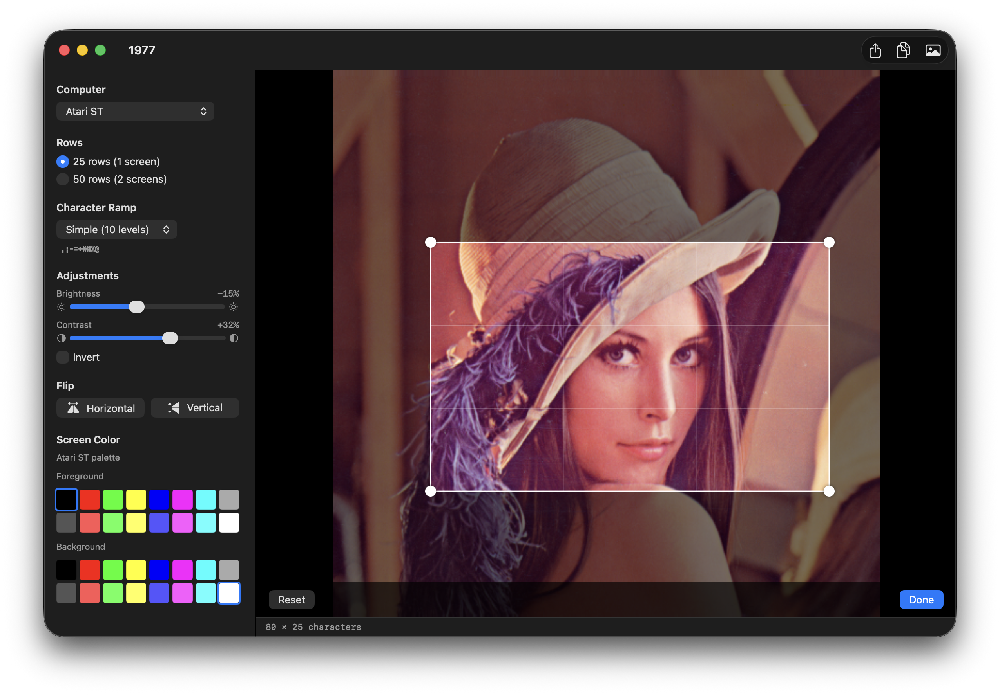
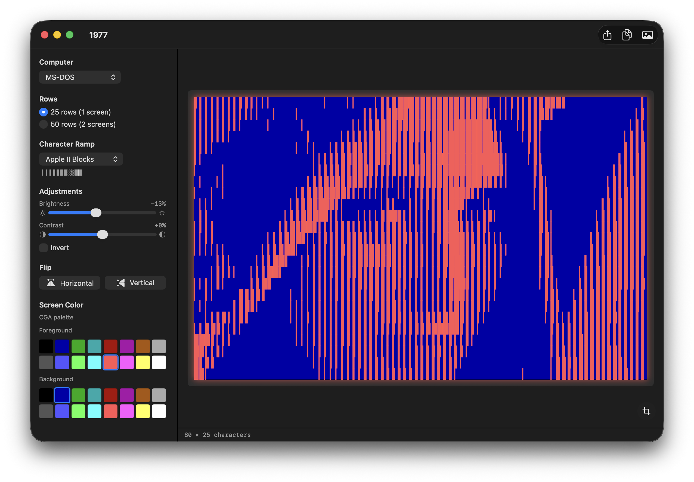
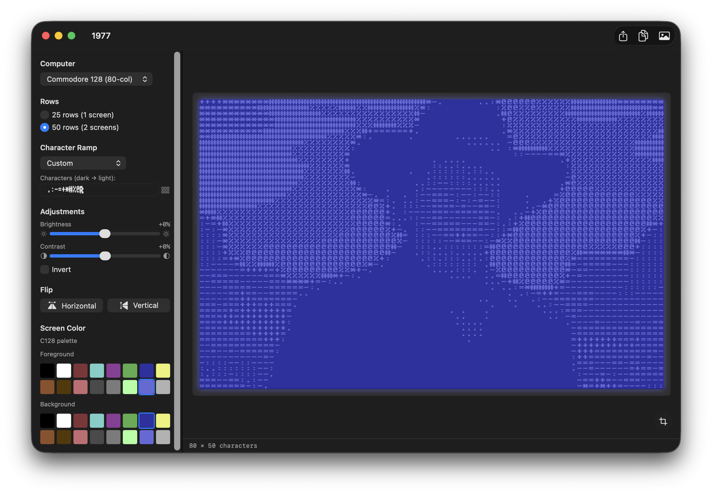
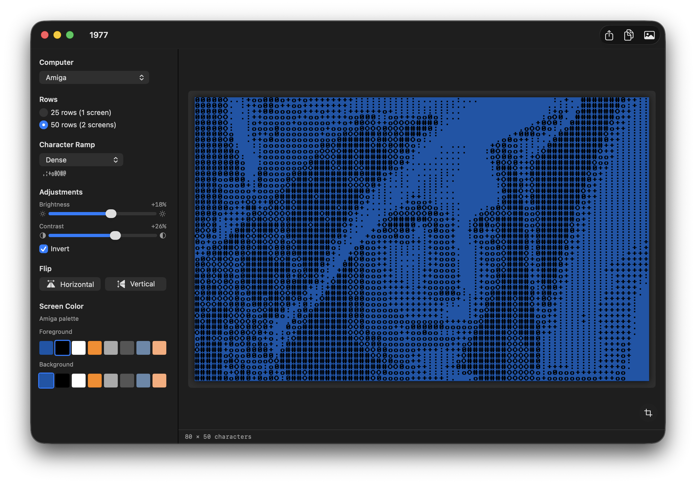
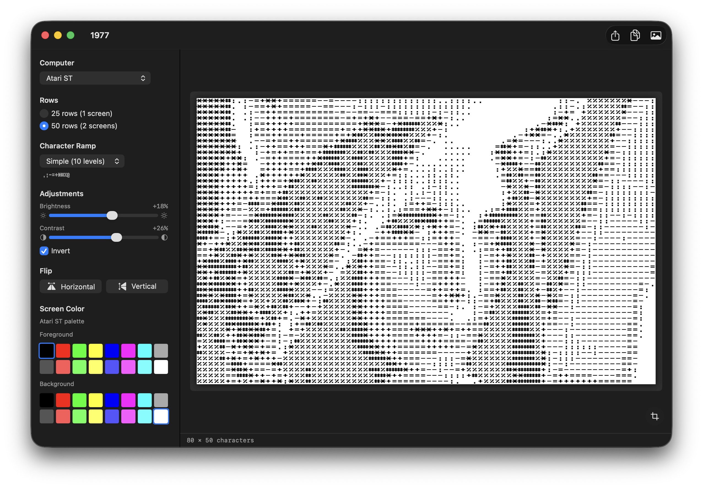
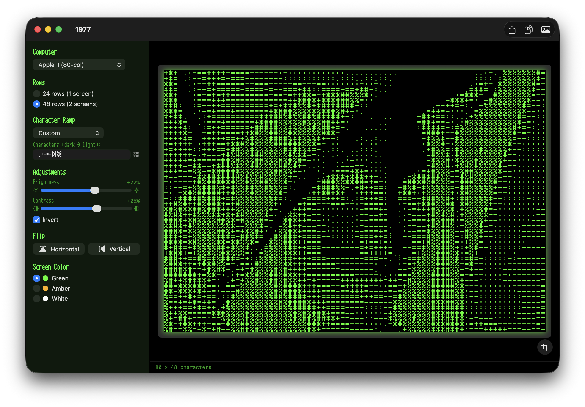
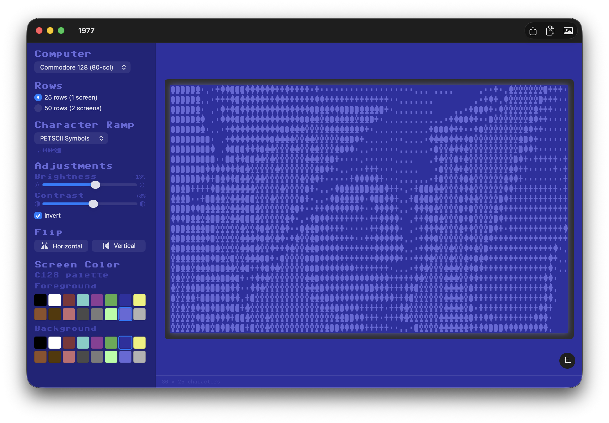

Features
Fifteen Classic Platforms
Apple II (40/80-col), Commodore PET, 64, 128 (80-col), VIC-20, Atari 8-bit, Atari ST, ZX Spectrum, Amiga, MS-DOS, Amstrad CPC, TRS-80 CoCo, MSX (40/32-col) — each with its native screen aspect.
Authentic Retro Fonts
Print Char 21, PR Number 3, Pet Me 64 / 2X / 128 2Y, EightBit Atari, Atari ST 8x16, ZX Spectrum, Amiga Topaz, Perfect DOS VGA 437, Amstrad CPC464, Hot CoCo, MSX Screen 0 / 1 — all bundled, all pixel-perfect.
Hardware Palettes
Phosphor green / amber / white for the Apple II and PET, plus full hardware-palette swatch pickers (FG + BG) for C64/C128, VIC-20, Atari, Spectrum, Amiga, CGA, Amstrad CPC (27 colours), CoCo, MSX, and the Apple IIgs 16-colour text palette. Per-platform colour memory.
Live Crop Tool
Draggable, resizable selection box with locked aspect ratio, rule-of-thirds grid, pinch-zoom, and trackpad pan. The ASCII output re-runs as you drag.
Character Picker
Every glyph in the platform’s font in a scrollable popover — click to build your own custom ramp from blocks, PETSCII, Mousetext, box-drawing, or anything else.
Built-in Ramps
Apple II Classic, Standard ASCII, Simple, Dense, PETSCII Blocks, PETSCII Symbols, CP437 Blocks — plus a free-form custom ramp.
Drag & Drop
Drop any PNG, JPEG, TIFF, GIF, BMP, or HEIC. Brightness, contrast, invert, flip, and row count all update live.
Retro UI Themes
Optional Apple II green-CRT, Apple IIgs amber, C64 blue, or MS-DOS chrome themes for the surrounding app window.
Multiple Exports
PNG (1×, 2×, 4× upscaled), bootable Apple II ProDOS disk image (.po) with a STARTUP launcher, Apple II text (CR endings), Mac text (LF), or runnable Applesoft BASIC (.bas).
How It Works
Drop an image & pick a platform
Any common format works. Pick from fifteen classic systems — the image is cropped (or you can refine the crop yourself) and aspect-fitted to that system’s native display canvas.
Sample brightness
Each character cell’s region is downsampled and converted to perceptual luminance using the BT.709 coefficients.
Map to characters
The brightness value indexes into your chosen character ramp — dark to light — producing a grid of glyphs in the platform’s native font.
Export
Save as a PNG (1×, 2×, or 4× upscaled), as plain text, or for the Apple II as a bootable ProDOS disk image or Applesoft BASIC program.
App Screenshots
1977 supports a range of classic text-mode platforms — each with its own native font, hardware palette, and aspect ratio.








Export Options
Export as a PNG at 1×, 2×, or 4× the platform’s native resolution — rendered with the selected font and screen colours — or, for Apple II output, as a bootable ProDOS disk image, plain text, or a runnable Applesoft BASIC program.

Apple II Disk Creation
Picking Apple II Disk Image writes a bootable ProDOS volume. A built-in STARTUP launcher auto-runs at boot and lets you pick between four programs — the slow, readable PRINT versions or the fast versions that BLOAD a screen-memory dump straight to text page 1 with a small embedded 6502 ML routine.

Requirements
- macOS 14 (Sonoma) or later
- Apple Silicon or Intel
Support
App Store
Download 1977 on the Mac App Store.
Contact
Questions? Email walter.tengler@gmail.com
Fonts
Bundled retro fonts: Apple II by Kreative Korporation; Pet Me family (PET, C64, C128, VIC-20) by Style; ZX Spectrum by Damien Guard; Perfect DOS VGA 437 by Zeh Fernando; plus Atari 8-bit, Atari ST, Amiga Topaz, Amstrad CPC464, Hot CoCo, and MSX Screen 0 / 1. Each font retains its original license — full details are in the app’s About / Credits dialog.